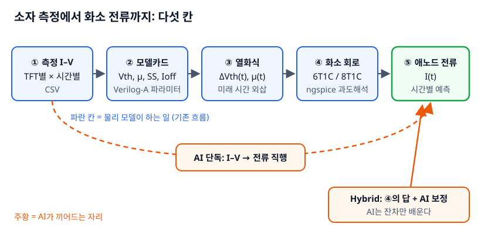
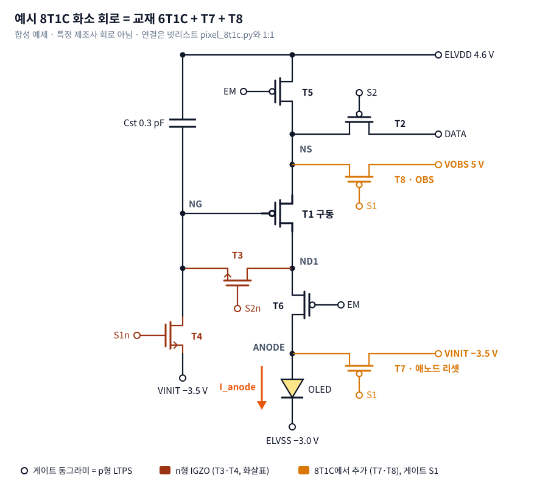
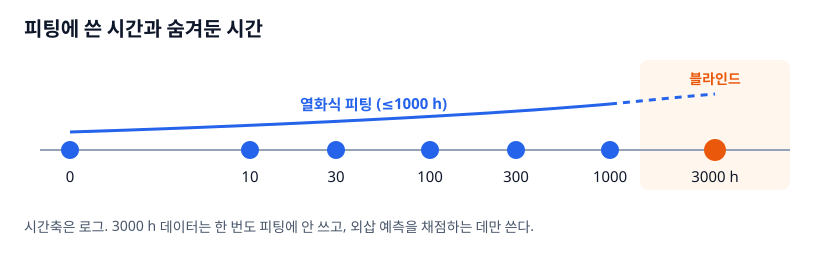
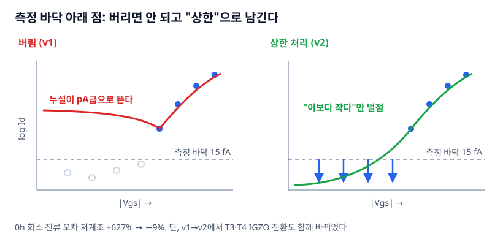
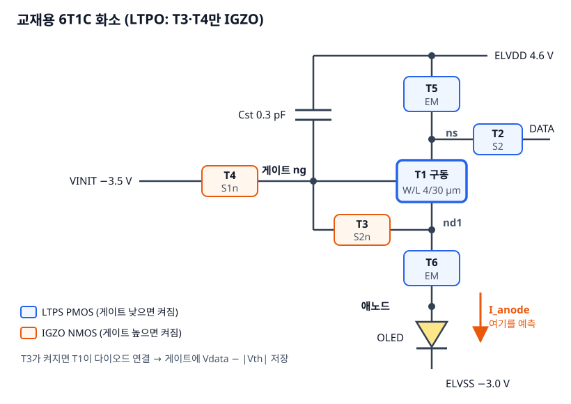
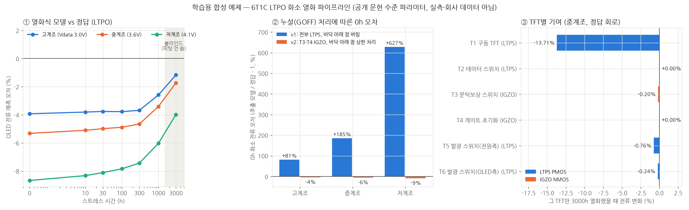
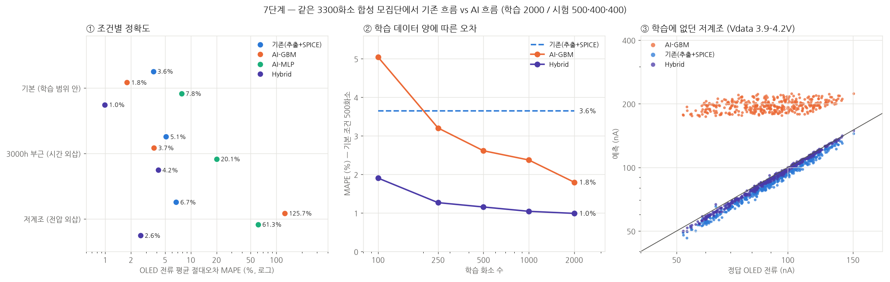
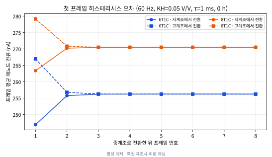
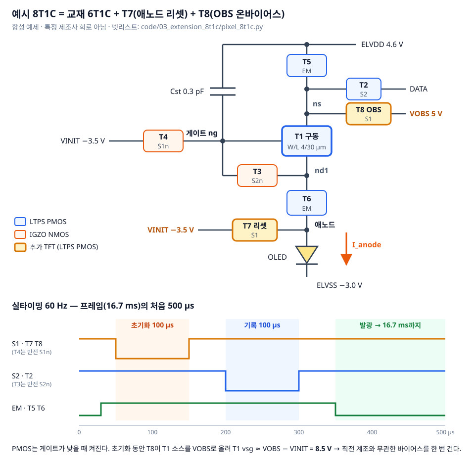

TFT 열화 → OLED 화소 전류 · ngspice + Verilog-A + ML 2026-09
모든 수치는 공개 문헌 수준 파라미터로 만든 합성 데이터에서 나왔다. 실측·PDK·특정 제조사 회로 없음. 방법을 검증하는 교보재이며 제품 예측이 아니다.
02 · 어떻게 확인했나
정답을 아는 합성 세계를 만들고, 실제 연구 흐름(측정 → 추출 → 열화식 → 회로 → 전류)을 그 위에서 돌려 각 칸이 얼마나 틀리는지 따로 채점했다.

run_all.sh 한 번으로 모든 결과가 바이트 단위까지 같게 재생성된다ngspice 45.2 + OpenVAF(Verilog-A) + Python. 교과서형 6T1C LTPO 화소와 예시 8T1C.
03 · 결론 ① 어느 TFT를 잴 것인가
04 · 결론 ② AI를 어디에 둘 것인가
log(정답 / 물리)만 학습한다. 학습 화소 100개일 때도 1.9%(GBM 5.0%, 물리 3.6%). 실측 화소가 비쌀수록 이 차이가 중요해진다.05 · 결론 ③으로 가는 길

6T1C = 8T1C. 고계조 88.3 = 88.3, 저계조 79.3 = 79.3. T7·T8만 늙혀도 전류 변화 0.00%.
그런데 정답 모델에는 히스테리시스가 없고, 지표는 2프레임 정상상태 평균뿐이었다. 회로도는 넷리스트와 1:1로 대조한 예시 회로이며 제조사 회로가 아니다.
06 · 결론 ③ 어떤 물리를 잴 것인가
게이트: 트랩을 끄면 이전 결과 재현(오차 ≤ 6e-6) · τ 검증 63.2% · 시간 간격 20 µs vs 2 µs 차이 0.01% · 2회 실행 바이트 동일.
07 · 결론 ③의 단서
6T1C → 8T1C, 수명 이득 없음. 차이 0.5%p는 시드 1개라 "나빠진다"고 할 근거도 약하다.
실제 60 Hz → 가속 1 ms 프레임. 프레임 길이 ≈ τ라 한 프레임 안에서 평균돼 잔상이 약 1/4로 보였다.
6T1C → 8T1C, +5.6%. OBS가 기록 직전 트랩 상태를 바꿔 보상 회로가 저장하는 |Vth|도 바뀐다. 감마 보정이 OBS 조건에 묶인다.
08 · 제안
09 · 이 자료를 어디까지 믿을 것인가
run_all.sh 재실행 시 모든 결과 바이트 동일부록 A · 측정 → 추출 → 열화식
| TFT | ΔVth 정답 3000 h | 열화식 예측 | 차이 |
|---|---|---|---|
| T1 구동 | 0.856 V | 0.843 V | −13 mV |
| T3 IGZO | 0.154 V | 0.140 V | −14 mV |
| T5 발광 | 2.818 V | 2.725 V | −93 mV |


부록 B · 6T1C 결과와 파이프라인 채점
| 계조 (Vdata) | 0 h | 1000 h | 3000 h | 유지율 |
|---|---|---|---|---|
| 고계조 3.0 V | 525.5 nA | 480.0 | 463.9 | 88.3% |
| 중계조 3.6 V | 237.3 nA | 211.4 | 202.5 | 85.3% |
| 저계조 4.1 V | 84.2 nA | 71.1 | 66.8 | 79.3% |
| 파이프라인 (예측/정답 − 1) | 0 h 고/중/저 | 3000 h 블라인드 |
|---|---|---|
| 시간별 추출 카드 | −4.4 / −5.8 / −9.0% | −2.6 / −3.1 / −5.3% |
| 0 h 카드 + 열화식 | −3.9 / −5.3 / −8.7% | −1.2 / −1.7 / −4.0% |
| 중계조 T1 게이트 | 저장값 | 이상값 Vdata − |Vth| |
|---|---|---|
| 0 h | 2.369 V | 2.400 V |
| 3000 h | 1.573 V | 1.543 V |
| 변화 | −0.796 V | −0.857 V |


부록 C · AI 비교 상세
| 방법 (MAPE / P95) | 학습 범위 안 | 3000 h 부근 | 저계조 |
|---|---|---|---|
| 기존 (추출 + SPICE) | 3.6% / 8% | 5.1% / 29% | 6.7% / 11% |
| AI-GBM | 1.8% / 5% | 3.7% / 11% | 125.7% / 218% |
| AI-MLP | 7.8% / 19% | 20.1% / 80% | 61.3% / 111% |
| Hybrid | 1.0% / 2% | 4.2% / 27% | 2.6% / 5% |

부록 D · 8T1C 히스테리시스 상세

| KH (τ 1 ms) | 0 | 0.02 | 0.05 | 0.10 |
|---|---|---|---|---|
| 6T1C E1 | 0.00% | 3.14% | 7.82% | 15.55% |
| 8T1C E1 | 0.00% | 2.38% | 5.84% | 11.32% |

| T7·T8 스트레스 | 가정 | 60 Hz 파형 측정 |
|---|---|---|
| duty | 0.012 | 0.0061 |
| T7 |Vgs| | 10 V | 3.49 V |
| T8 |Vgs| | 10 V | 11.96 V |
모델: ptft_hyst.va — 내부 노드 mem이 vsg를 τ로 추종, vth += KH·(V(mem) − VREFH). 72회 시뮬레이션, 결과는 code/04_hysteresis_8t1c/results/.
부록 E · 교재와 재현
git clone https://github.com/waterfirst/tft_ngspice_velilog-a.git
cd tft_ngspice_velilog-a/code
python3 -m venv .venv && . .venv/bin/activate && pip install -r requirements.txt
bash run_all.sh # ngspice(39+)와 openvaf가 PATH에 있어야 한다 → 1장합성 데이터 교보재 · 특정 제조사 회로·실측 데이터 아님 · 코드와 본문 MIT · github.com/waterfirst/tft_ngspice_velilog-a